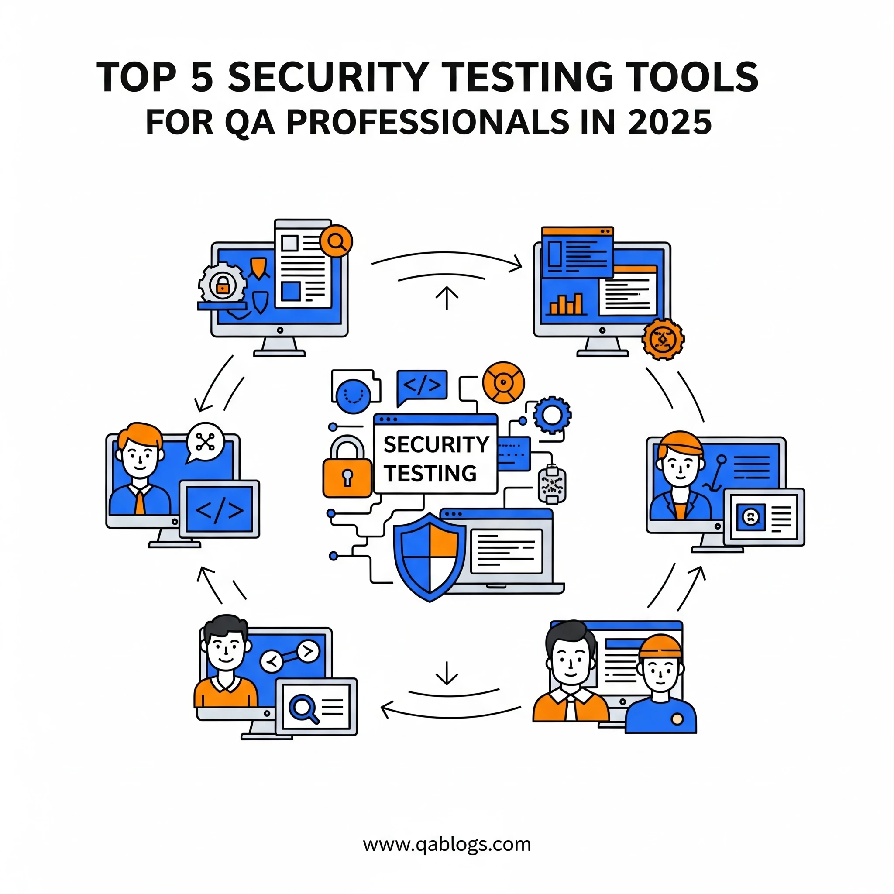

Top 5 Security Testing Tools Every QA Should Know

Key Takeaways
- Security testing tools are essential for modern QA teams to identify vulnerabilities and protect against cyberattacks.
- OWASP ZAP, Burp Suite, Nessus, SonarQube, and Metasploit are the top 5 security testing tools every QA should master.
- Integration of security testing into QA processes can reduce remediation costs by up to 100 times compared to fixing vulnerabilities in production.
- Each tool serves specific purposes: web application testing, network security, code analysis, and penetration testing.
In today's digital landscape, where cyberattacks cost businesses an average of $4.45 million per breach according to IBM's 2023 Cost of a Data Breach Report, security testing has evolved from a nice-to-have to an absolute necessity. As quality assurance professionals, we're no longer just guardians of functionality and performance—we're the first line of defense against vulnerabilities that could compromise entire systems.
The modern QA engineer must wear multiple hats, and security testing expertise is now as crucial as understanding automated testing frameworks or API validation. With 95% of successful cyberattacks attributed to human error and software vulnerabilities, the tools we choose can make the difference between a secure application and a security nightmare.
This comprehensive guide explores the top five security testing tools that every QA professional should master to stay ahead in the evolving cybersecurity landscape.
Why Security Testing Tools Matter in Modern QA
Security testing tools serve as specialized instruments that help identify vulnerabilities, assess risk levels, and validate security controls before applications reach production. Think of them as diagnostic equipment for security health—much like how a doctor uses various tools to diagnose different conditions, security testing requires different tools for different types of vulnerabilities.
The integration of security testing into the QA process, often called "shift-left security," ensures that security considerations are embedded from the earliest stages of development rather than being an afterthought. This approach can reduce remediation costs by up to 100 times compared to fixing vulnerabilities in production.
1. OWASP ZAP (Zed Attack Proxy)
Overview and Key Features
OWASP ZAP stands as the most popular open-source web application security scanner, and for good reason. Developed by the Open Web Application Security Project (OWASP), this tool offers both automated scanning and manual testing capabilities, making it accessible to both security newcomers and experienced professionals.
- Automated Security Scanning: Performs comprehensive vulnerability scans including SQL injection, cross-site scripting (XSS), and authentication bypass attempts
- Manual Testing Support: Provides intercepting proxy functionality for manual security testing
- API Testing: Native support for REST and SOAP API security testing
- Integration Capabilities: Seamlessly integrates with CI/CD pipelines through command-line interface and APIs
- Comprehensive Reporting: Generates detailed vulnerability reports with severity ratings and remediation guidance
Real-World Application
Consider a scenario where you're testing an e-commerce platform. ZAP can automatically crawl through the application, testing login forms for SQL injection vulnerabilities, checking payment pages for XSS attacks, and validating session management. A major retail company recently used ZAP to identify over 150 security vulnerabilities in their checkout process before launch, preventing potential financial losses and customer data breaches.
Why QA Teams Choose ZAP
The tool's strength lies in its balance between automation and manual control. Unlike purely automated scanners that might miss context-specific vulnerabilities, ZAP allows testers to guide the scanning process while still benefiting from automated detection capabilities. Its active community contributes to regular updates and extensive documentation, making it an excellent starting point for teams new to security testing.
2. Burp Suite
Overview and Key Features
Burp Suite represents the gold standard in web application security testing, trusted by security professionals worldwide. While it offers a free Community Edition, its Professional version provides advanced features that make it indispensable for serious security testing initiatives.
- Advanced Proxy and Interceptor: Sophisticated HTTP/HTTPS traffic interception and modification capabilities
- Comprehensive Scanner: Automated vulnerability detection with advanced crawling and attack simulation
- Manual Testing Tools: Includes Repeater, Intruder, and Sequencer for detailed manual security analysis
- Extension Framework: Rich ecosystem of plugins and extensions for specialized testing needs
- Collaboration Features: Team-based testing with shared project capabilities (Professional version)
Practical Implementation
A financial services company implemented Burp Suite Professional across their QA teams to test their mobile banking application. The tool's ability to intercept and modify HTTPS traffic helped identify critical vulnerabilities in their API authentication mechanism, where tokens weren't properly validated. This discovery led to a complete overhaul of their authentication system, preventing potential account takeovers affecting thousands of customers.
Comparative Analysis: Community vs Professional
| Feature | Community Edition | Professional Edition |
|---|---|---|
| Automated Scanning | Limited | Full-featured |
| Scan Speed | Throttled | Unlimited |
| Advanced Tools | Basic | Complete toolkit |
| Reporting | Basic | Comprehensive |
| Support | Community | Commercial |
The Professional version's advanced scanning capabilities can identify vulnerabilities 5-10 times faster than the Community edition, making it worthwhile for organizations with regular security testing requirements.
3. Nessus
Overview and Key Features
Nessus has established itself as the world's most widely deployed vulnerability scanner, with over 3 million downloads worldwide. Developed by Tenable, it excels in network vulnerability assessment and compliance checking, making it essential for comprehensive security testing strategies.
- Network Vulnerability Scanning: Comprehensive assessment of network infrastructure and connected devices
- Compliance Auditing: Built-in templates for PCI DSS, HIPAA, CIS, and other regulatory frameworks
- Asset Discovery: Automatic identification and cataloging of network assets
- Risk Prioritization: Advanced risk scoring and vulnerability prioritization based on exploitability
- Extensive Plugin Library: Over 170,000 plugins covering the latest vulnerabilities and attack vectors
Industry Impact and Usage
Healthcare organizations particularly benefit from Nessus due to its robust HIPAA compliance checking capabilities. A regional hospital network used Nessus to identify over 2,000 vulnerabilities across their medical devices and IT infrastructure, including critical flaws in MRI machines and patient monitoring systems that could have been exploited to access sensitive patient data.
Integration with QA Processes
Smart QA teams integrate Nessus scans into their pre-production testing phases, especially for applications that will be deployed in complex network environments. The tool's ability to simulate real-world attack scenarios helps identify vulnerabilities that might not be apparent in isolated testing environments.
4. SonarQube
Overview and Key Features
SonarQube revolutionizes security testing by integrating static application security testing (SAST) directly into the development workflow. This continuous code quality platform analyzes source code for security vulnerabilities, bugs, and code smells across 27+ programming languages.
- Static Code Analysis: Deep analysis of source code for security vulnerabilities and quality issues
- Multi-Language Support: Comprehensive coverage including Java, C#, Python, JavaScript, PHP, and more
- DevOps Integration: Seamless integration with Git, Jenkins, Azure DevOps, and other development tools
- Security Hotspots: Intelligent identification of security-sensitive code requiring manual review
- Quality Gate: Automated quality checks that can block deployments if security standards aren't met
Developer-Centric Security
Unlike traditional security tools that test completed applications, SonarQube shifts security testing left by analyzing code as it's written. A software development team at a fintech startup implemented SonarQube and reduced their security-related bugs by 78% within the first six months, significantly improving their code review process efficiency.
Measurable Impact on Code Quality
- 40-60% reduction in security vulnerabilities reaching production
- 25-35% improvement in code review efficiency
- 50-70% faster identification of security issues compared to manual code reviews
Best Practices for Implementation
- Custom Quality Profiles: Tailoring rules to match your organization's security requirements
- Incremental Adoption: Starting with new code analysis before applying to legacy systems
- Team Training: Ensuring developers understand security findings and remediation approaches
- Continuous Monitoring: Regular review of security hotspots and quality gate metrics
5. Metasploit
Overview and Key Features
Metasploit represents the most comprehensive penetration testing framework available, offering both commercial and open-source versions. While traditionally used by security professionals and ethical hackers, forward-thinking QA teams increasingly leverage Metasploit for advanced security validation.
- Exploit Database: Extensive collection of exploits for known vulnerabilities
- Payload Generation: Custom payload creation for testing application defenses
- Post-Exploitation Analysis: Tools for assessing the impact of successful attacks
- Social Engineering Toolkit: Comprehensive phishing and social engineering testing capabilities
- Reporting and Documentation: Detailed exploitation reports for remediation planning
Advanced Security Testing Scenarios
A government contractor's QA team used Metasploit to simulate advanced persistent threat (APT) attacks on their classified document management system. The testing revealed that while their perimeter defenses were strong, internal network segmentation was insufficient, allowing lateral movement between systems. This discovery led to a complete network architecture redesign.
Ethical Considerations and Legal Framework
- Authorization: Explicit written permission for all testing activities
- Scope Definition: Clear boundaries for testing activities
- Data Protection: Ensuring test activities don't compromise sensitive information
- Compliance: Adherence to organizational and regulatory security testing requirements
Learning Curve and Training Requirements
- Foundational Security Knowledge: Understanding of common attack vectors and vulnerability types
- Hands-on Training: Practical experience in controlled environments
- Continuous Learning: Regular updates on new exploits and testing techniques
- Team Collaboration: Working closely with security teams for knowledge transfer
Comparative Analysis: Choosing the Right Tool for Your Needs
Tool Selection Matrix
| Use Case | Primary Tool | Secondary Tool | Rationale |
|---|---|---|---|
| Web Application Testing | OWASP ZAP | Burp Suite | ZAP for automation, Burp for manual testing |
| Network Security Assessment | Nessus | Metasploit | Nessus for discovery, Metasploit for validation |
| Code Quality Integration | SonarQube | OWASP ZAP | SonarQube for SAST, ZAP for DAST |
| Compliance Testing | Nessus | SonarQube | Nessus for infrastructure, SonarQube for code |
| Penetration Testing | Metasploit | Burp Suite | Metasploit for exploitation, Burp for web apps |
Budget Considerations
Open Source Options:
- OWASP ZAP: Completely free with full functionality
- Metasploit Community: Free with limited features
- SonarQube Community: Free for small teams and open-source projects
Commercial Solutions:
- Burp Suite Professional: $399/year per user
- Nessus Professional: $3,990/year
- SonarQube Enterprise: Custom pricing based on lines of code
Implementation Timeline
Phase 1 (Months 1-2): Foundation
- Deploy OWASP ZAP for basic web application scanning
- Implement SonarQube for code quality monitoring
- Train team on fundamental security testing concepts
Phase 2 (Months 3-4): Enhancement
- Introduce Burp Suite for advanced web application testing
- Deploy Nessus for network vulnerability assessment
- Develop security testing procedures and checklists
Phase 3 (Months 5-6): Advanced Capabilities
- Integrate Metasploit for penetration testing (if required)
- Establish automated security testing pipelines
- Develop security metrics and reporting frameworks
Practical Implementation Strategies
Integration with Existing QA Processes
Continuous Integration Integration:
Modern security testing tools
excel when integrated into CI/CD pipelines. A typical implementation might include:
- SonarQube analysis triggered on every code commit
- OWASP ZAP automated scans during staging deployments
- Nessus network scans scheduled weekly or before major releases
Test Case Enhancement:
Security tools enhance traditional test cases
by:
- Adding security-specific test scenarios based on tool findings
- Incorporating vulnerability verification into regression testing
- Creating security-focused smoke tests for critical application paths
Team Training and Skill Development
Essential Skills for QA Teams:
- Threat Modeling: Understanding how attackers think and operate
- Security Fundamentals: Knowledge of OWASP Top 10 and common vulnerability types
- Tool Proficiency: Hands-on experience with selected security testing tools
- Risk Assessment: Ability to prioritize vulnerabilities based on business impact
Training Resources:
- OWASP Testing Guide and documentation
- Tool-specific certification programs (e.g., Burp Suite Certified Practitioner)
- Hands-on labs and practice environments
- Industry conferences and webinars
Measuring Security Testing Effectiveness
Key Performance Indicators:
- Vulnerability Detection Rate: Number of vulnerabilities identified per testing cycle
- False Positive Rate: Percentage of tool findings that aren't actual vulnerabilities
- Time to Resolution: Average time from vulnerability discovery to remediation
- Coverage Metrics: Percentage of application functionality covered by security tests
Reporting and Communication:
Effective security testing requires
clear communication with stakeholders:
- Executive dashboards showing security posture trends
- Developer-friendly reports with clear remediation guidance
- Risk-based prioritization for remediation efforts
- Regular security testing metrics reviews
Future Trends and Emerging Technologies
AI and Machine Learning in Security Testing
The integration of artificial intelligence and machine learning is revolutionizing security testing tools. Next-generation tools are beginning to:
- Predict Vulnerabilities: Using ML algorithms to identify potential security flaws before they're exploited
- Reduce False Positives: Intelligent filtering of security findings based on application context
- Automate Threat Modeling: AI-driven analysis of application architecture for security risks
- Adaptive Testing: Tools that learn from previous testing cycles to improve detection accuracy
Cloud-Native Security Testing
As applications migrate to cloud platforms, security testing tools are evolving to address:
- Container Security: Specialized tools for Docker and Kubernetes security assessment
- Serverless Security: Testing approaches for AWS Lambda, Azure Functions, and Google Cloud Functions
- Infrastructure as Code: Security validation of Terraform, CloudFormation, and ARM templates
- Multi-Cloud Environments: Tools that work across AWS, Azure, Google Cloud, and hybrid environments
DevSecOps Integration
The future of security testing lies in seamless integration with development workflows:
- Policy as Code: Security requirements defined and enforced through code
- Automated Compliance: Tools that automatically verify regulatory compliance
- Security Orchestration: Automated coordination between different security testing tools
- Risk-Based Testing: Intelligent prioritization of security testing efforts based on business risk
Conclusion: Building a Robust Security Testing Foundation
Security testing is no longer optional in today's threat landscape—it's a fundamental requirement for delivering reliable, trustworthy software. The five tools covered in this guide represent the essential foundation every QA professional needs to build comprehensive security testing capabilities.
Key Takeaways:
- Start with OWASP ZAP for immediate web application security testing capabilities
- Invest in SonarQube to shift security testing left in your development process
- Consider Burp Suite Professional for advanced web application security testing
- Implement Nessus for comprehensive network and infrastructure security assessment
- Explore Metasploit for advanced penetration testing capabilities when appropriate
The security testing landscape continues evolving rapidly, with new threats emerging daily and tools advancing to meet these challenges. Success requires not just tool selection, but ongoing investment in team training, process improvement, and staying current with emerging threats and testing methodologies.
As QA professionals, we have the opportunity—and responsibility—to be security champions within our organizations. By mastering these essential security testing tools and integrating them into our testing practices, we can significantly enhance our applications' security posture and protect our organizations from the costly consequences of security breaches.
Ready to enhance your security testing capabilities? Start by downloading OWASP ZAP and SonarQube Community Edition today. Begin with small pilot projects, gradually building your team's expertise and expanding your security testing program. Remember, the best security testing program is one that evolves continuously, adapting to new threats and incorporating lessons learned from each testing cycle.
The journey to security testing excellence begins with a single step—and that step starts with choosing the right tools for your organization's needs. Your applications, your users, and your organization's reputation depend on the security testing decisions you make today.
Join Our Community of QA Professionals
Get exclusive access to in-depth articles, testing strategies, and industry insights. Stay ahead of the curve with our expert-curated content delivered straight to your inbox.
Nikunj Mistri
Founder, QA Blogs
About the Author